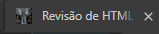
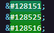
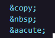

Revisando conteúdos HTML Avançado
Tag picture

A tag picture é usada para colocar uma imagem, e carregar as imagens em tamanhos diferentes pensando em todos os usuários, de desktop, tablet ou celular. Se reduzirmos a tela, podemos ver a redução da imagem conforme descrito no código.
Favicon
Favicon é o ícone da página, aquele ícone que fica no canto esquerdo da página no navegador
Abaixo segue um print do favcon da nossa página:
Emogis e caracteres
Emogis são emoticons, símbolos que expressão reações, emoções:
💗 😍 😄
Para fazer essas representações, esse emotions, usamos algumas marcações especiais:
Os caracteres especiais são pouco usados, pois o HTML evoluiu e agora aceita os caracteres:
© á
Áudios
A tag de áudio é usada para anexar um arquivo MP3 para ser reproduzido dentro da página ou sistema.
Vídeos
A tag de vídeo é usado para embedar, abexar um arquivo MP4 para ser reproduzido dentro da página ou sistema.